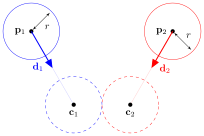

Vector Geometry Exercises
Vector Geometry Exercises#
Exercise 1
Given the following vectors
calculate:
(a) \(| \mathbf{a} |\);
(b) \(\hat{\mathbf{b}}\);
(c) \( 3\mathbf{a} + 2 \mathbf{c}\);
(d) \( \mathbf{a} \cdot \mathbf{b}\);
(e) the angle between \(\mathbf{a}\) and \(\mathbf{c}\);
(f) \(\mathbf{b} \times \mathbf{c}\);
(g) a unit vector \(\mathbf{d}\) which is perpendicular to \(\mathbf{a}\) and \(\mathbf{b}\)
Solution to Exercise 1
(a) \(|\mathbf{a}| = \sqrt{1^2 + 0^2 + 3^2} = \sqrt{1 + 9} = \sqrt{10}\);
(b) \(\hat{\mathbf{b}} = \dfrac{\mathbf{b}}{|\mathbf{b}|} = \dfrac{1}{\sqrt{14}} \begin{pmatrix} -2 \\ 3 \\ 1 \end{pmatrix} = \begin{pmatrix} -\sqrt{14} / 7 \\ 3\sqrt{14} / 14 \\ \sqrt{14} / 14 \end{pmatrix}\);
(c) \( 3\mathbf{a} + 2 \mathbf{c} = 3 \begin{pmatrix} 1 \\ 0 \\ 3 \end{pmatrix} + 2\begin{pmatrix} 2 \\ 5 \\ -3 \end{pmatrix} = \begin{pmatrix} 3 \\ 0 \\ 9 \end{pmatrix} + \begin{pmatrix} 4 \\ 10 \\ -6 \end{pmatrix} = \begin{pmatrix} 7 \\ 10 \\ 3 \end{pmatrix}\);
(d) \( \mathbf{a} \cdot \mathbf{b} = \mathbf{a} = \begin{pmatrix} 1 \\ 0 \\ 3 \end{pmatrix} \cdot \begin{pmatrix} -2 \\ 3 \\ 1 \end{pmatrix} 1(-2) + 0(3) + 3(1) = 1\);
(e) \(\theta = \cos^{-1} \left( \dfrac{\mathbf{a} \cdot \mathbf{c}}{|\mathbf{a}||\mathbf{c}|} \right) = \cos^{-1} \left( \dfrac{-7}{\sqrt{10}\sqrt{38}} \right) \approx 1.938\);
(f)
(g)
Exercise 2
A basis in \(\mathbb{R}^3\) is \(U = \{ \mathbf{u}_1, \mathbf{u}_2, \mathbf{u}_3 \}\) where
(a) Show that \(\{ \mathbf{u}_1, \mathbf{u}_2, \mathbf{u}_3 \}\) are linearly independent;
(b) Calculate the change of basis matrix \(A_{E \to U}\) that can be used to change the basis from the standard basis to \(U\);
(c) Given the vector \(\mathbf{v} = (2, -1, 3)_E\), determine \([\mathbf{v}]_U\) (the vector \(\mathbf{v}\) represented with respect to the basis \(U\));
(d) Another basis in \(\mathbb{R}^3\) is \(W = \{(-1, 1, 1), (0, 1, 0), (0, 1, -1) \}\), calculate the change of basis matrix \(A_{U\to W}\) and hence \([\mathbf{v}]_W\).
Solution to Exercise 2
(a) A set of vectors is linearly independent if the determinant of the matrix formed by the column vectors is non-zero.
so \(\mathbf{u}_1\), \(\mathbf{u}_2\) and \(\mathbf{u}_3\) are linearly independent.
(b) \(A_{E\to U} = (\mathbf{u}_1, \mathbf{u}_2, \mathbf{u}_3)^{-1}\). Using Gauss-Jordan elimination to calculate the inverse matrix
therefore
(c)
(d)
Therefore \(A_{U \to W} = \begin{pmatrix} -1 & 0 & -1 \\ 3 & 2 & 3 \\ -2 & -1 & -1 \end{pmatrix}\).
Exercise 3
A straight line \(\ell\) in \(\mathbb{R}^3\) passes through the two points \(\mathbf{p}_1 = (-1, 1, 2)\) and \(\mathbf{p}_2 = (2, -3, 0)\).
(a) Find the vector equation of \(\ell\).
(b) Calculate the position of a point two-thirds along the chord \(\mathbf{p}_1 \to \mathbf{p}_2\).
(c) Does \(\ell\) pass through the point \((-7, 9, 6)\)?
Solution to Exercise 3
(a)
(b) \(\mathbf{p}_1 + \dfrac{2}{3} \mathbf{d} = \begin{pmatrix} -1 \\ 1 \\ 2 \end{pmatrix} + \dfrac{2}{3} \begin{pmatrix} 3 \\ - 4\\ -2 \end{pmatrix} = \begin{pmatrix} 1 \\ -5/3 \\ 2/3 \end{pmatrix}.\)
(c)
The first equation gives \(t = -2\) and substituting into the other two equations gives \(1 - 4(-2) = 9\) and \(2 - 2(-2) = 6\) so \(\ell\) passes through \((-7,9,6)\).
Exercise 4
A polygon has vertices with the co-ordinates \(\mathbf{p}_1=(8,-2,1)\), \(\mathbf{p}_2=(9,1,3)\) and \(\mathbf{p}_3=(8,2,-2)\).
(a) Determine the point-normal equation of the plane that passes through the polygon.
(b) Another point on the plane has co-ordinates \(\mathbf{p}_4 = (x, 9, 0)\). Determine the value of \(x\).
Solution to Exercise 4
(a)
(b)
Exercise 5
Two lines are defined by the vector equations \((1, 0, 1) + t_1(2, -1, 3)\) and \((1, 4, 7) + t_2(2, 0, -1)\).
(a) find the point of intersection or show that they are skew;
(b) find the shortest distance between the two lines;
Solution to Exercise 5
(a) Setting the two lines equal to each other
The second equation gives \(t_1 = -4\) which substituted into the first equation gives \(t_2 = -4\). Substituting both \(t_1\) and \(t_2\) into the third equation gives \(-11 \neq 11\) which is a contradiction so the two lines do not intersect.
The direction vectors are \(\mathbf{d}_1 = (2, -1, 3)\) and \(\mathbf{d}_2 = (2, 0, -1)\). For the two lines to be parallel we need a scalar \(k\) such that \(\mathbf{d}_1 = k\mathbf{d}_2\)
the second equation is a contradiction so no value of \(k\) exists and the two lines are not parallel. Since the lines do not intersect and they are not parallel they are skew.
(b) Calculate the unit vector \(\hat{\mathbf{n}}\) which is perpendicular to both of the lines
Using equation (16)
Exercise 6
In computer game a projectile is fired from position \((0, 5, -10)\) with velocity \((100, 100, 200)\) towards a wall that is modelled by the plane with normal vector \((-3, 0, -2)\) and the point at position \((10, 10, 0)\).
Calculate the position where the projectile will collide with the wall.
Solution to Exercise 6
Let \(\mathbf{q} = (0, 5, -10)\), \(\mathbf{d} = (100, 100, 200)\), \(\mathbf{n} = (-3, 0, -2)\) and \(\mathbf{p} = (10, 10, 0)\). Using equation (11)
Exercise 7
A point is at co-ordinates \((-1,0,25)\) m travels along a straight line with velocity \((5, 2, -1)\) m/s and an observer watches the object from a point at position \((4, 6, 6)\) m.
(a) Calculate the time \(t\) at which the object makes its closest approach to the viewer.
(b) What is the distance between the observer and the object when it makes its closest approach?
Solution to Exercise 7
(a) This is a shortest distance problem between the point \(\mathbf{q}=(4,6,6)\) and the line defined by the point \(\mathbf{p} = (-1, 0, 25)\) and the direction vector \(\mathbf{d} = (5, 2, -1)\). Using equation (14) we have
So the point makes its closest approach after 1.87 seconds.
(b) The point at closest approach is
so the distance between the observer and the point at the closest approach is
Exercise 8
Two spherical objects are moving along straight lines. The centre of the first sphere is at \(\mathbf{p}_1\) and is travelling in the direction \(\mathbf{d}_1\) and the second sphere is at \(\mathbf{p}_2\) and is travelling in the direction \(\mathbf{d}_2\). Both spheres have the same radius \(r\).

(a) Derive the following formula for the calculation of \(t\) (hint: how far appart are \(\mathbf{c}_1\) and \(\mathbf{c}_2\) at the point of collision?)
(b) Write down a test for determining whether the spheres collide or not.
(c) Given that \(\mathbf{p}_1 = (67/3, 91/3, 103/3)\), \(\mathbf{d}_1 = (-7, -13, -10)\), \(\mathbf{p}_2 = (4/3, -9, -10)\), \(\mathbf{d}_2 = (2, 3, 9)\) and \(r = 1\), show that the spheres will collide and hence calculate the positions of the centres of the spheres at this time.
Solution to Exercise 8
(a) The spheres collide when the distance between their centres is \(2r\)
(b) Let \(a = (\mathbf{d}_1 - \mathbf{d}_2)^2\), \(b = 2 (\mathbf{p}_1 - \mathbf{p}_2) \cdot (\mathbf{d}_1 - \mathbf{d}_2)\) and \(c = (\mathbf{p}_1 - \mathbf{p}_2)^2 - 4r^2\) then
(c)
Since \(b^2 - 4ac = 4096 > 0\) the two spheres collide. Calculating the value of \(t\)
Therefore the spheres collide at \(t = 7/3\). Calculating the positions of the centres of the spheres at the point of collision
Exercise 9
Two planes are defined by their normal vectors \(\mathbf{n}_1 = (1, -1, 2)\) and \(\mathbf{n}_2 = (-2, 1, 3)\) and pass through the points \(\mathbf{p}_1 = (1, 0, 3)\) and \(\mathbf{p}_2 = (4, 1, 1)\) respectively.
Determine the equation of the line of intersection.
Solution to Exercise 9
Calculate the vector perpendicular to both \(\mathbf{n}_1\) and \(\mathbf{n}_2\)
Calculate the scalars in the point-normal form of the equation of a plane
Let \(\mathbf{r} = (x, 0, 0)\) be a point on the line of intersection then
so the equation of the line of intersection is \((11/3, 0, 0) + t(-5, -7, -1)\).